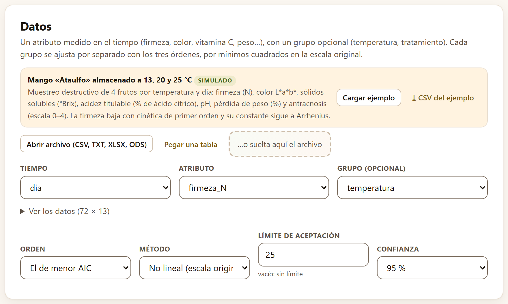
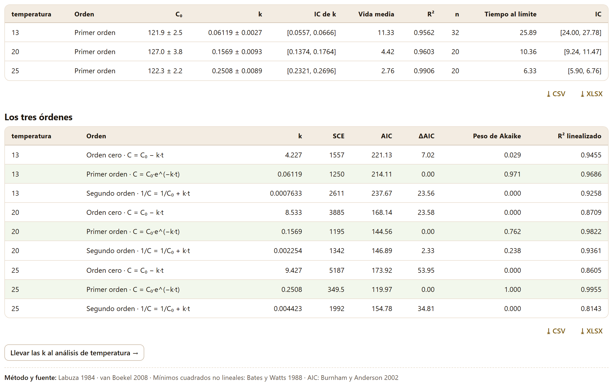
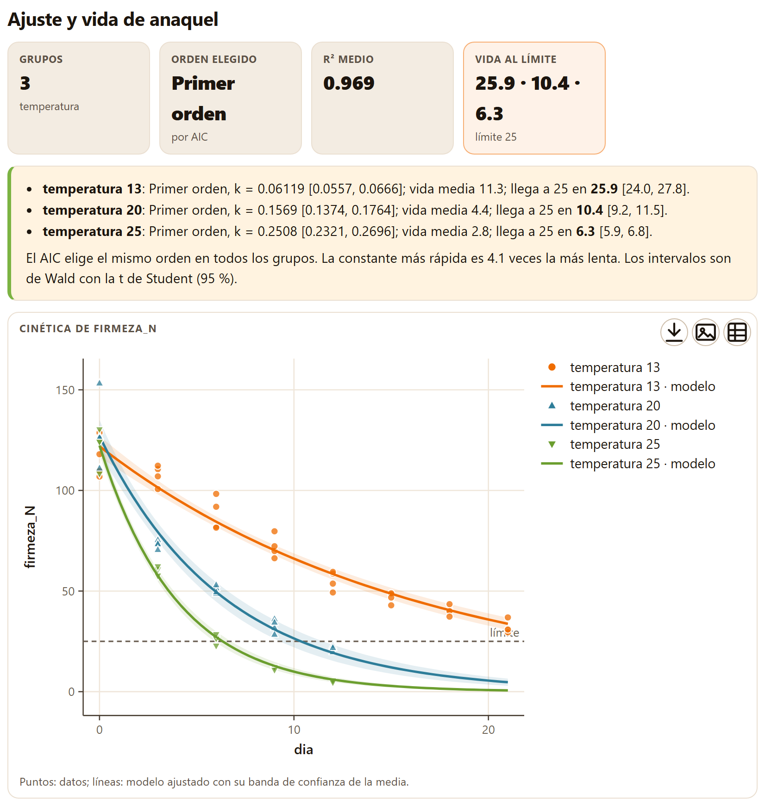
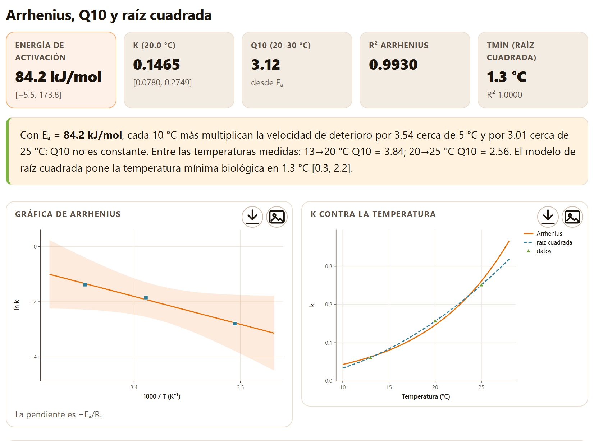
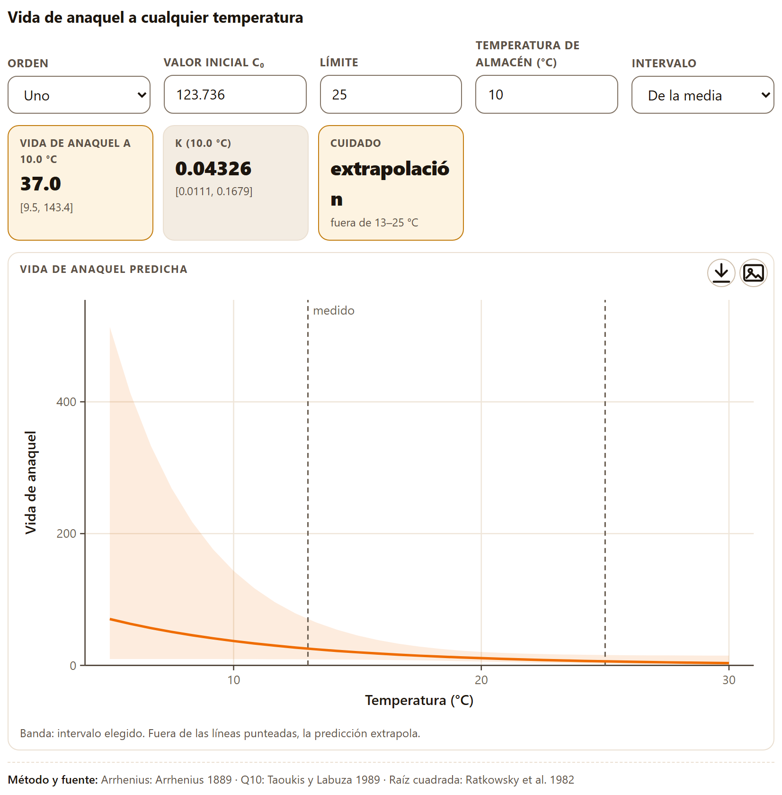
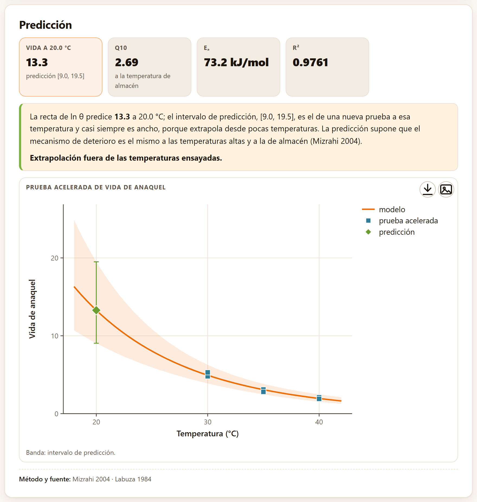
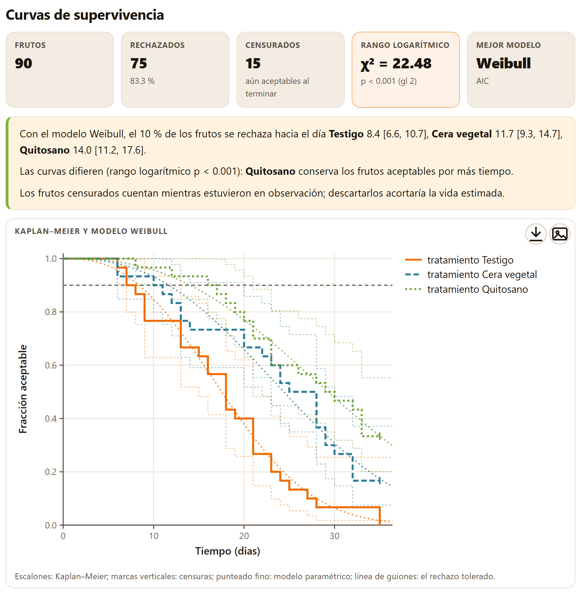
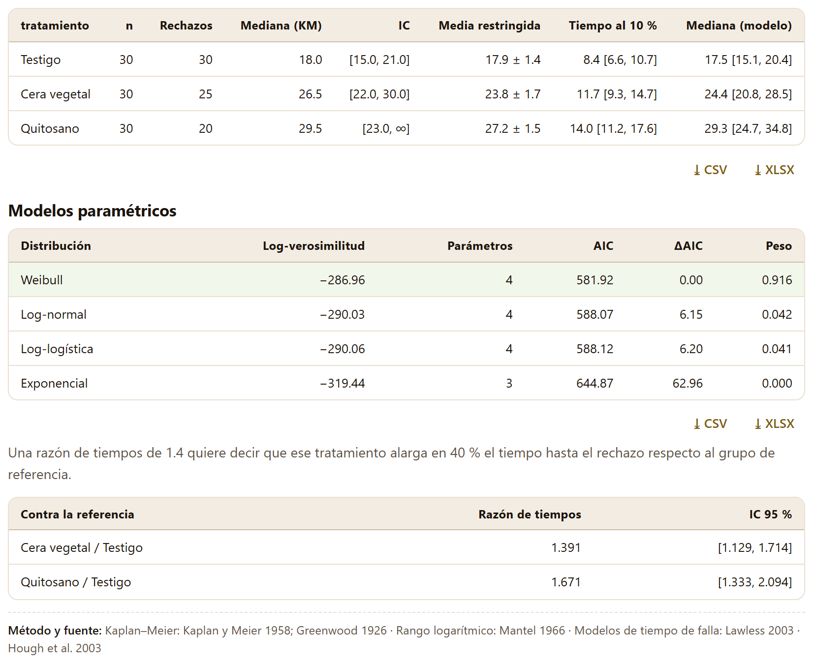

Saber que un lote se ablanda no basta: hace falta saber a qué velocidad, cuántos días tarda en llegar al límite que el mercado acepta y cuánto cambia esa velocidad con la temperatura. Este bloque ajusta la cinética del deterioro, la lleva a Arrhenius para predecir la vida de anaquel a la temperatura del almacén, extrapola una prueba acelerada y, cuando lo que se mide es el día en que cada fruto se rechaza, estima el tiempo hasta el rechazo contando los frutos que seguían sanos al terminar.
El bloque se llama Cinética y vida de anaquel (en la barra, Vida de anaquel) y se presenta así: «Órdenes de reacción, temperatura, pruebas aceleradas y tiempo hasta el rechazo». Tiene cuatro pestañas: Modelos cinéticos, Temperatura, Prueba acelerada y Tiempo hasta rechazo. Como en todo el programa, no hay botón de calcular: en cuanto hay datos, cada cambio de un control rehace las cuentas que dependen de él.
Las cuatro pestañas forman una ruta. En Modelos cinéticos se ajusta un atributo (la firmeza, el color, la vitamina C) contra el tiempo en cada temperatura; el botón Llevar las k al análisis de temperatura → pasa las constantes a Temperatura, que las ajusta a Arrhenius y predice la vida a cualquier temperatura. Prueba acelerada hace lo mismo cuando lo que tienes no son constantes sino vidas de anaquel observadas a temperaturas altas. Tiempo hasta rechazo es otro enfoque: no modela un atributo, sino el día en que cada fruto deja de ser aceptable. El capítulo usa dos ejemplos simulados: el mango del ejemplo (la firmeza de 72 frutos a 13, 20 y 25 °C) y el chayote del ejemplo con dos recubrimientos (los días hasta el rechazo de 90 frutos).
La tarjeta Datos pide un atributo medido en el tiempo y, si quieres, un grupo. Su texto lo resume: «Cada grupo se ajusta por separado con los tres órdenes, por mínimos cuadrados en la escala original.»
Los papeles de las columnas son Tiempo (en días, horas o semanas: la app no convierte unidades, y la vida de anaquel sale en la unidad que uses), Atributo y Grupo (opcional), que puede ser la temperatura o el tratamiento. Con el mango del ejemplo (Cargar ejemplo en la franja, o Inicio›Datos de ejemplo) la app elige sola dia, firmeza_N y temperatura. La tabla trae trece columnas (Ver los datos (72 × 13)): puedes cambiar el atributo por el color (L, a, b), los sólidos solubles (sst) o la pérdida de peso sin volver a cargar nada.
Debajo están cuatro controles:
| Control | Por omisión | Qué decide |
|---|---|---|
| Orden | El de menor AIC | Qué orden se reporta en cada grupo; también puedes fijar Orden cero, Primer orden o Segundo orden para todos |
| Método | No lineal (escala original) | Cómo se estiman C₀ y k. Linealizado ajusta la recta clásica (C, ln C o 1/C contra t) y sólo se recomienda para comparar con trabajos viejos |
| Límite de aceptación | 25 (vacío: sin límite) | El valor del atributo a partir del cual el producto deja de ser aceptable; con él se calcula el tiempo al límite |
| Confianza | 95 % | El nivel de todos los intervalos (90, 95 o 99 %) |

dia, el atributo firmeza_N y el grupo temperatura. Abajo, los cuatro controles con sus valores por omisión; el límite de 25 N es el que trae escrito la app.Casi todo el deterioro de calidad se describe con una de tres formas, que se distinguen por cómo depende la velocidad del valor que queda. La app ajusta las tres en cada grupo:
| Orden | Modelo | Vida media | Tiempo al límite | Cuándo aparece |
|---|---|---|---|---|
| Orden cero | C = C₀ − k·t | C₀ / (2k) | (C₀ − L) / k | Cambios a velocidad constante: pardeamiento no enzimático, algunas pérdidas de agua |
| Primer orden | C = C₀·e^(−k·t) | ln 2 / k | ln(C₀/L) / k | La velocidad es proporcional a lo que queda: firmeza, vitaminas, clorofila |
| Segundo orden | 1/C = 1/C₀ + k·t | 1 / (C₀·k) | (1/L − 1/C₀) / k | Caídas muy rápidas al principio que luego se frenan |
Una k positiva quiere decir que el atributo baja; una negativa, que sube (la formación de un pigmento, por ejemplo), y la lectura lo avisa con «k negativa: el atributo aumenta con el tiempo (formación).»
La costumbre de comparar órdenes por el R² de rectas linealizadas (C, ln C y 1/C contra el tiempo) tiene un defecto: cada transformación cambia la escala del error, así que los tres R² no se miden con la misma vara, y el logaritmo o el recíproco dan un peso enorme a los valores pequeños del final del ensayo. La app ajusta los tres modelos por mínimos cuadrados no lineales sobre el atributo tal como se midió (Bates y Watts 1988), así que los tres comparten los mismos residuos y pueden compararse con el criterio de información de Akaike (AIC; Burnham y Anderson 2002). El AIC premia el buen ajuste y castiga los parámetros; aquí los tres modelos tienen dos parámetros (C₀ y k), de modo que gana el de menor suma de cuadrados del error. La diferencia con el mejor, ΔAIC, se convierte en el peso de Akaike, la probabilidad relativa de que ese orden sea el mejor de los tres.
La tabla Los tres órdenes (figura 3.2, abajo) muestra para cada grupo y cada orden su ecuación, k, la suma de cuadrados del error (SCE), el AIC, el ΔAIC, el Peso de Akaike y, sólo como referencia clásica, el R² linealizado; la fila del orden elegido se pinta de verde. Con el mango, el primer orden gana en las tres temperaturas: a 13 °C con un peso de 0.971 (ΔAIC 7.02 sobre el orden cero), a 20 °C con 0.762 (el segundo orden queda a 2.33 y conserva un peso de 0.238) y a 25 °C con 1.000.

Mira la columna R² linealizado a 13 °C: 0.9455 para el orden cero y 0.9686 para el primero. La diferencia parece pequeña, pero el AIC le da al primer orden un peso de 0.971. Y a 20 °C el segundo orden linealizado tiene un R² (0.9361) mayor que el del orden cero (0.8709) pese a que ninguno de los dos se acerca al primero. Si eliges Linealizado en Método, el mosaico R² medio lo avisa con en la escala linealizada y las vidas cambian: 25.1, 10.9 y 6.0 días en lugar de 25.9, 10.4 y 6.3.
La tarjeta de resultados se llama Ajuste y vida de anaquel. Sus mosaicos dicen cuántos grupos se ajustaron, qué orden se eligió y cómo (por AIC o fijado por ti), el R² medio y, si hay límite, la Vida al límite de cada grupo.
Con el mango del ejemplo: 3 grupos de temperatura, Primer orden por AIC, R² medio 0.969 y vida al límite 25.9 · 10.4 · 6.3 días (límite 25). La lectura en palabras da, para cada grupo, el orden, k con su intervalo, la vida media y el día en que el atributo llega al límite, también con su intervalo:
| Temperatura | C₀ (N) | k (d⁻¹) | IC 95 % de k | Vida media (d) | Días a 25 N | IC 95 % |
|---|---|---|---|---|---|---|
| 13 °C | 121.9 | 0.06119 | [0.0557, 0.0666] | 11.33 | 25.89 | [24.00, 27.78] |
| 20 °C | 127.0 | 0.1569 | [0.1374, 0.1764] | 4.42 | 10.36 | [9.24, 11.47] |
| 25 °C | 122.3 | 0.2508 | [0.2321, 0.2696] | 2.76 | 6.33 | [5.90, 6.76] |
La lectura cierra con dos comprobaciones: si el AIC eligió el mismo orden en todos los grupos («El AIC elige el mismo orden en todos los grupos.») y cuántas veces la constante más rápida es la más lenta (aquí, 4.1). Si los grupos no coinciden en el orden, la lectura recomienda fijar uno solo: las k de órdenes distintos no tienen las mismas unidades y no se pueden comparar ni llevar a Arrhenius.

Los intervalos de C₀ y k son de Wald con la t de Student y los grados de libertad del ajuste (n − 2), como dice la lectura: «Los intervalos son de Wald con la t de Student (95 %).» El del tiempo al límite se obtiene por el método delta: el tiempo es una función de C₀ y k (tabla 3.2), y su varianza combina las de los dos parámetros y su covarianza.
El tiempo a 13 °C (25.9 días) cae después del último día medido (21): es una extrapolación corta dentro del mismo modelo. Si el atributo nunca alcanza el límite con el modelo elegido —un orden cero con k negativa y un límite inferior, por ejemplo—, la lectura dice no alcanza el límite y el mosaico pone una raya.
Debajo de la figura, la tabla del ajuste (figura 3.2, arriba) repite estos números con C₀ y k ± su error estándar, el R² en la escala original y el número de frutos de cada grupo (32 a 13 °C, porque ahí se midió hasta el día 21; 20 a 20 y 25 °C). Las dos tablas se descargan con ⤓ CSV y ⤓ XLSX, y la figura, con los botones de su recuadro (capítulo 2, sección 2.1). Los métodos son los de Labuza (1984) y van Boekel (2008), con mínimos cuadrados no lineales de Bates y Watts (1988) y el AIC de Burnham y Anderson (2002).
Con Orden en Orden cero, el mosaico dice fijado por ti, el R² medio baja a 0.892 y las vidas al límite pasan a 21.1, 10.3 y 8.1 días. A 13 °C la recta subestima la vida casi cinco días, porque no se curva cuando la firmeza baja; a 25 °C la sobreestima casi dos. El AIC (tabla 3.2) ya decía que el orden cero era peor en las tres temperaturas: fijar un orden sirve para comparar con un trabajo publicado, no para mejorar la predicción.
La pestaña Temperatura ajusta la dependencia de k con la temperatura con tres modelos y, con ella, predice la vida de anaquel a cualquier temperatura. Su tarjeta de entrada, «Constantes de velocidad a varias temperaturas», es una tabla editable: «Escribe k (con su error estándar, si lo tienes, para ponderar) o llévalas desde los modelos cinéticos.»
La tabla tiene las columnas Temperatura (°C), k y EE de k (opcional); + Agregar fila añade una y la × de cada fila la quita. Hacen falta al menos dos temperaturas distintas con k positiva (tres para la raíz cuadrada). Debajo, la casilla Ponderar por el error estándar de k (sin marcar) y la Temperatura de referencia (°C) (20), a la que se reporta k.
Al abrir Temperatura sin pasar por Modelos cinéticos, la tabla trae escritas tres constantes de ejemplo: 0.0622, 0.1494 y 0.2765 a 13, 20 y 25 °C. No son las del mango del ejemplo (0.06119, 0.1569 y 0.2508) y dan otros resultados: Eₐ 88.1 kJ/mol [80.6, 95.7], Q10 de 3.50 y 3.43 entre las temperaturas medidas y Tmín 2.4 °C. Para analizar el mango, usa Llevar las k al análisis de temperatura →, como en el resto de esta sección.
El botón Llevar las k al análisis de temperatura →, al pie de Ajuste y vida de anaquel, copia a la tabla la k y el error estándar de cada grupo, lleva a la sección de vida de anaquel el orden elegido, la media de los C₀ (123.736 con el mango) y el límite, y abre la pestaña. Sólo funciona si el grupo es la temperatura escrita como número; si no, avisa «Para Arrhenius el grupo debe ser la temperatura (números).» Las k llegan con todos sus decimales (0.06119234438672582…): es lo esperado, la tabla guarda el valor completo.
Arrhenius (1889) supone que ln k cae en línea recta contra el inverso de la temperatura absoluta, con una pendiente que da la energía de activación Eₐ: cuanto mayor es Eₐ, más se acelera el deterioro al subir la temperatura. La app ajusta la recta por mínimos cuadrados sobre ln k, ponderada por (k/EE)² si marcas la casilla. El Q10 es el factor por el que se multiplica k con 10 °C más; se calcula entre pares de temperaturas medidas y, desde Eₐ, a cualquier temperatura (Taoukis y Labuza 1989): con la misma Eₐ, Q10 es mayor en frío que en caliente. El modelo de raíz cuadrada de Ratkowsky et al. (1982) supone que √k crece en línea recta con la temperatura y corta el cero en una temperatura mínima biológica, Tmín, debajo de la cual el proceso se detendría.
Con las k del mango, la tarjeta Arrhenius, Q10 y raíz cuadrada da:
| Mosaico | Valor | Qué es |
|---|---|---|
| Energía de activación | 84.2 kJ/mol | Con su intervalo, [−5.5, 173.8] |
| k (20.0 °C) | 0.1465 | k a la temperatura de referencia, [0.0780, 0.2749] |
| Q10 (20–30 °C) | 3.12 | Q10 entre 20 y 30 °C calculado desde Eₐ |
| R² Arrhenius | 0.9930 | De la recta de ln k contra 1/T |
| Tmín (raíz cuadrada) | 1.3 °C | Con R² 1.0000; intervalo [0.3, 2.2] en la lectura |
La lectura lo pone en palabras: «Con Eₐ = 84.2 kJ/mol, cada 10 °C más multiplican la velocidad de deterioro por 3.54 cerca de 5 °C y por 3.01 cerca de 25 °C: Q10 no es constante.» Entre las temperaturas medidas, Q10 vale 3.84 de 13 a 20 °C y 2.56 de 20 a 25 °C. Debajo, la tabla compara cada k medida con la que predice Arrhenius (0.06119 frente a 0.06293 a 13 °C, por ejemplo) y da Q10 a cada temperatura (3.30, 3.12 y 3.01).

El intervalo de Eₐ, de −5.5 a 173.8 kJ/mol, parece absurdo, pero es honesto: con tres temperaturas la recta de Arrhenius tiene un solo grado de libertad y la t de Student vale 12.7. La estimación puntual es razonable (y coincide con el Q10 de 3 a 4 típico de la firmeza); su precisión no lo es. Si vas a predecir lejos de las temperaturas medidas, mide al menos cuatro, o pondera por el error estándar de k, que aprovecha la precisión de cada ajuste. El R² de 1.0000 de la raíz cuadrada tampoco es una virtud: con tres puntos y dos parámetros, casi cualquier curva suave pasa por ellos.
La parte de abajo de la misma tarjeta, Vida de anaquel a cualquier temperatura, combina la recta de Arrhenius con el orden, el valor inicial y el límite para predecir cuántos días dura el producto a la temperatura que elijas.
Los controles son Orden (Cero, Uno o Dos; por omisión, Uno), Valor inicial C₀ (125), Límite (25), Temperatura de almacén (°C) (10) e Intervalo: De la media (la vida esperada de un lote típico) o De predicción (la de un lote nuevo, que suma la dispersión de los puntos alrededor de la recta y es más ancho). Si el límite es mayor que C₀, la app entiende que el atributo sube.
El intervalo de la vida se obtiene al pasar el de k(T) por la fórmula de θ; la incertidumbre de C₀ no se propaga. Los mosaicos dan la Vida de anaquel a esa temperatura con su intervalo y la k que le corresponde; si la temperatura está fuera de las medidas, aparece un tercer mosaico ámbar, Cuidado · extrapolación · fuera de 13–25 °C.

| Temperatura de almacén | Vida (días) | IC 95 % | Nota |
|---|---|---|---|
| 5 °C | 70.3 | [9.6, 513.6] | extrapolación |
| 10 °C | 37.0 | [9.5, 143.4] | extrapolación; de predicción, [6.5, 209.0] |
| 13 °C | 25.4 | [9.2, 70.3] | el ajuste directo dio 25.9 |
| 15 °C | 19.9 | [8.7, 45.4] | |
| 20 °C | 10.9 | [5.8, 20.5] | el ajuste directo dio 10.4 |
A 13 y 20 °C la predicción no repite exactamente la vida del ajuste directo (25.4 frente a 25.9, 10.9 frente a 10.4), porque usa la k suavizada por Arrhenius y un solo C₀, la media de los tres. Es la forma correcta de leerlo: la recta resume las tres temperaturas a la vez.
En la versión 1.0, al usar Llevar las k al análisis de temperatura →, los campos Orden, Valor inicial C₀ y Límite se llenan, pero los mosaicos y la curva de la vida siguen calculados con los valores anteriores hasta que cambias cualquiera de los cinco controles. Con el mango, el mosaico muestra 37.2 días (con C₀ = 125) aunque el campo diga 123.736; al tocar el campo (o cambiar la temperatura y regresarla) pasa a 37.0. La figura 3.5 está tomada después de ese paso.
Una prueba acelerada guarda el producto a temperaturas más altas que las de su almacén para que se deteriore en días en lugar de semanas, y extrapola la vida a la temperatura real. La pestaña Prueba acelerada hace esa extrapolación desde las vidas observadas, sin pasar por las constantes.
La tarjeta Vidas de anaquel a temperaturas altas es una tabla editable con Temperatura (°C) y Vida de anaquel observada (en días, semanas o la unidad que uses: El ejemplo es ilustrativo.). Trae escritas seis pruebas, dos en cada temperatura: 4.8 y 5.3 días a 30 °C, 3.1 y 2.8 a 35 °C, 2.1 y 1.9 a 40 °C. Hacen falta al menos tres vidas en dos temperaturas distintas. Los controles son Modelo —Arrhenius (ln θ contra 1/T) o Q10 (ln θ contra T)— y Temperatura de almacén (°C) (20).

La tarjeta Predicción da la vida a la temperatura de almacén (la media geométrica que predice la recta) con su intervalo de predicción, que es el que corresponde a una prueba nueva a esa temperatura y casi siempre es ancho. Con el modelo Q10 (ln θ contra T) la vida a 20 °C pasa a 12.4 días [8.5, 18.3], con Q10 2.53 (constante en el modelo), Eₐ 68.4 kJ/mol y R² 0.9744: los dos modelos se parecen entre 30 y 40 °C y se separan al extrapolar. La lectura avisa en negritas «Extrapolación fuera de las temperaturas ensayadas.» cuando la temperatura de almacén está fuera de las de la prueba, que en una prueba acelerada es siempre.
La extrapolación vale sólo si el mecanismo de deterioro es el mismo a las temperaturas altas y a la del almacén (Mizrahi 2004; Labuza 1984). En un fruto fresco esto rara vez se cumple: a 35 o 40 °C el fruto puede dejar de madurar normalmente, sufrir daño por calor o pudrirse por otros hongos, y a la temperatura del almacén puede aparecer daño por frío, que ninguna prueba caliente anticipa. Las pruebas aceleradas son más seguras en productos procesados (deshidratados, jugos, pulpas) que en frutos enteros.
Hay ensayos en que no se mide un atributo continuo, sino el día en que cada fruto deja de ser aceptable: aparece una pudrición, se arruga, el panel lo rechaza. La pestaña Tiempo hasta rechazo los analiza como datos de supervivencia: «Una fila por fruto: el tiempo hasta que se rechazó (o hasta el último día que se observó sano) y si se rechazó (1) o seguía aceptable al terminar (0, censurado).»
Los papeles son Tiempo hasta el rechazo o la censura, Rechazado (1) o censurado (0) y Tratamiento (opcional). El ejemplo es el chayote con dos recubrimientos: 30 frutos por tratamiento (testigo, cera vegetal y quitosano) a 10 °C, en un ensayo que terminó a los 35 días; la app elige sola dias, rechazado y tratamiento. Los controles son Intervalo de Kaplan–Meier (Logarítmico, Log-log o Lineal), Modelo paramétrico (El de menor AIC, Weibull, Log-normal, Log-logística o Exponencial) y Rechazo tolerado (%) (10, de 1 a 99).
Un fruto que seguía sano el día 35 no tiene un «día de rechazo», pero sí aporta información: sabemos que duró al menos 35 días. Está censurado por la derecha. Descartarlo, o ponerle 35 como si se hubiera rechazado ese día, acorta la vida estimada. El estimador de Kaplan–Meier (Kaplan y Meier 1958) resuelve esto: en cada día con rechazos multiplica la fracción que sobrevive, 1 − dᵢ/nᵢ, donde nᵢ son los frutos que todavía estaban en observación; los censurados cuentan en nᵢ hasta que salen. Los intervalos usan la varianza de Greenwood (1926) en la escala elegida; el logarítmico, que es el de omisión, nunca se sale de 0 a 1.
La tarjeta Curvas de supervivencia abre con cinco mosaicos: Frutos 90, Rechazados 75 (83.3 %), Censurados 15 (aún aceptables al terminar), Rango logarítmico χ² = 22.48, p < 0.001 (gl 2), y Mejor modelo Weibull por AIC. La prueba de rango logarítmico (Mantel 1966) compara las curvas completas de los tratamientos; si difieren, la lectura nombra al que conserva los frutos aceptables por más tiempo: Quitosano.

Debajo, la tabla por tratamiento (figura 3.8, arriba) da la Mediana (KM) —el día en que la curva cruza el 50 %— con su intervalo, la Media restringida (el área bajo la curva hasta el último día observado, ± su error), el Tiempo al 10 % y la Mediana (modelo), estos dos del modelo paramétrico:
| Tratamiento | n | Rechazos | Mediana (KM) | IC | Media restringida | Tiempo al 10 % |
|---|---|---|---|---|---|---|
| Testigo | 30 | 30 | 18.0 | [15.0, 21.0] | 17.9 ± 1.4 | 8.4 [6.6, 10.7] |
| Cera vegetal | 30 | 25 | 26.5 | [22.0, 30.0] | 23.8 ± 1.7 | 11.7 [9.3, 14.7] |
| Quitosano | 30 | 20 | 29.5 | [23.0, ∞] | 27.2 ± 1.5 | 14.0 [11.2, 17.6] |
El intervalo de la mediana del quitosano no tiene límite superior (∞): su curva de confianza superior nunca baja del 50 % antes de que termine el ensayo. No es un error, sino la forma de decir que el ensayo no duró lo suficiente para acotar esa mediana. La media restringida sirve justamente en esos casos, porque siempre existe; pero depende del día en que se cortó el ensayo y sólo se compara entre tratamientos observados el mismo tiempo.
Kaplan–Meier describe sin suponer una forma; un modelo paramétrico supone una distribución del tiempo hasta el rechazo y, a cambio, da el tiempo de cualquier porcentaje de rechazo, incluso fuera de los días observados, y una medida única del efecto de cada tratamiento.
La app ajusta cuatro modelos de tiempo de falla con censura (Lawless 2003), todos con un parámetro por tratamiento: Weibull (el riesgo de rechazo crece o decrece con el tiempo), log-normal y log-logístico (el riesgo sube y luego baja) y exponencial (riesgo constante, el caso particular de Weibull con forma 1). La tabla Modelos paramétricos los compara por su log-verosimilitud y su AIC:
| Distribución | Log-verosimilitud | Parámetros | AIC | ΔAIC | Peso |
|---|---|---|---|---|---|
| Weibull | −286.96 | 4 | 581.92 | 0.00 | 0.916 |
| Log-normal | −290.03 | 4 | 588.07 | 6.15 | 0.042 |
| Log-logística | −290.06 | 4 | 588.12 | 6.20 | 0.041 |
| Exponencial | −319.44 | 3 | 644.87 | 62.96 | 0.000 |
Con el modelo elegido, la lectura da el día en que se rechaza el porcentaje tolerado: «Con el modelo Weibull, el 10 % de los frutos se rechaza hacia el día Testigo 8.4 [6.6, 10.7], Cera vegetal 11.7 [9.3, 14.7], Quitosano 14.0 [11.2, 17.6].» Con Rechazo tolerado (%) en 50, son las medianas del modelo: 17.5, 24.4 y 29.3 días, muy cerca de las de Kaplan–Meier (18.0, 26.5 y 29.5). Si fijas otro modelo, los números cambian poco con el log-normal (8.3, 11.6 y 14.9 días) o el log-logístico (8.7, 12.4 y 15.1), y mucho con el exponencial (1.9, 3.0 y 4.3): un riesgo constante predice rechazos desde el primer día, que en el chayote no ocurrieron (el primero fue hacia el día 6).

Los cuatro modelos son de tiempo de falla acelerado: el tratamiento estira o encoge la escala del tiempo. Su efecto se resume en una razón de tiempos contra el primer tratamiento (el de referencia); la app lo explica así: «Una razón de tiempos de 1.4 quiere decir que ese tratamiento alarga en 40 % el tiempo hasta el rechazo respecto al grupo de referencia.» Con Weibull, la cera vegetal alarga el tiempo hasta el rechazo 1.391 veces [1.129, 1.714] y el quitosano 1.671 veces [1.333, 2.094]: un 39 % y un 67 % más que el testigo, y ninguno de los dos intervalos incluye el 1. Los métodos citados son Kaplan y Meier (1958), Greenwood (1926), Mantel (1966), Lawless (2003) y Hough et al. (2003), que aplica estas ideas a la vida de anaquel sensorial.
| Si el AIC elige órdenes distintos en los grupos | entonces fija uno solo (el que gana en más grupos o el de mayor peso total) antes de comparar las k o llevarlas a Arrhenius. |
| Si el peso de Akaike del mejor orden es menor de 0.9 | entonces el segundo orden también es plausible; compara sus vidas al límite antes de reportar una. |
| Si el tiempo al límite cae después del último día medido | entonces es una extrapolación del modelo; reporta su intervalo y, si puedes, alarga el ensayo. |
| Si el intervalo de Eₐ es muy ancho (pocas temperaturas) | entonces no predigas lejos de las temperaturas medidas; pondera por el error estándar de k o mide otra temperatura. |
| Si aparece el mosaico Cuidado · extrapolación | entonces lee el intervalo de predicción, no sólo la vida, y no extrapoles debajo de la temperatura de daño por frío del producto. |
| Si el rango logarítmico da p < 0.05 | entonces los tratamientos difieren en el tiempo hasta el rechazo; las razones de tiempos dicen cuánto. |
| Si una razón de tiempos tiene un intervalo que incluye el 1 | entonces ese tratamiento no alarga la vida con claridad respecto a la referencia. |
| Si el exponencial queda muy lejos por AIC | entonces el riesgo de rechazo no es constante (lo normal en frutos): no lo uses aunque sea el más simple. |
Son guías para interpretar, no leyes: lo que sabes del cultivo, del cultivar y de cómo se condujo el ensayo siempre manda.
La vida al límite sale con una raya. El modelo nunca alcanza el límite: revisa que el límite esté del lado correcto (debajo de C₀ si el atributo baja) o deja el campo vacío para no calcularla. «Para Arrhenius el grupo debe ser la temperatura (números)». El grupo es un tratamiento o la temperatura viene escrita con texto («13 °C»); escribe las k a mano en Temperatura. La pestaña Temperatura da Eₐ 88.1 kJ/mol y no 84.2. Estás viendo las k que trae escritas, no las del mango: usa Llevar las k al análisis de temperatura →. La vida a la temperatura de almacén no cambia después de llevar las k. Toca cualquiera de los cinco controles de esa sección (sección 3.4). No sale la tarjeta de Arrhenius. Hacen falta dos temperaturas distintas con k positiva (tres para la raíz cuadrada); las k negativas se omiten, con aviso. La prueba acelerada no da resultado. Necesita al menos tres vidas en dos temperaturas distintas. Los mosaicos de rechazados y censurados no cuadran con tu ensayo. La columna de estado debe valer 1 para rechazado y 0 para censurado; códigos como «sí/no», «R/C» o 2 no se interpretan como rechazo.